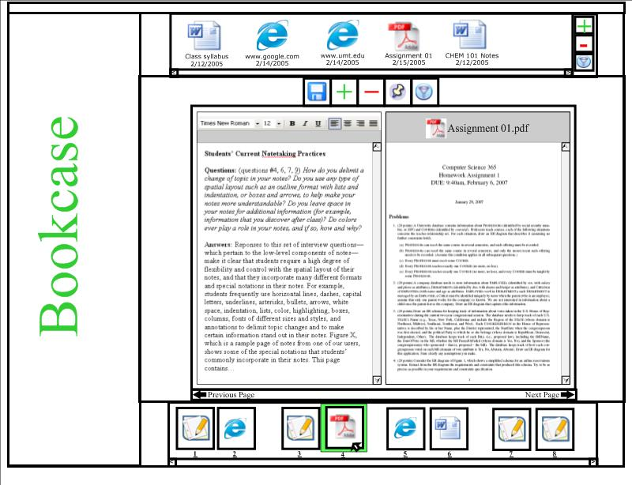
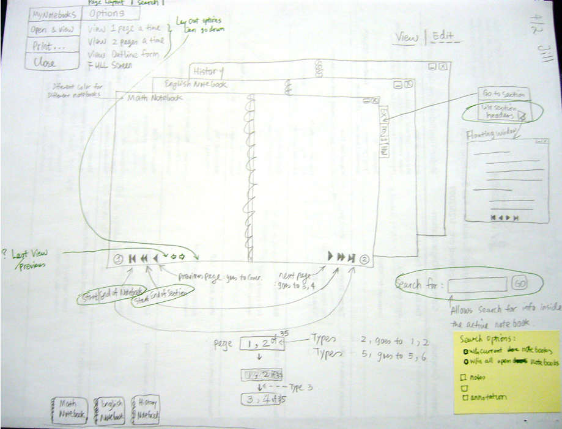
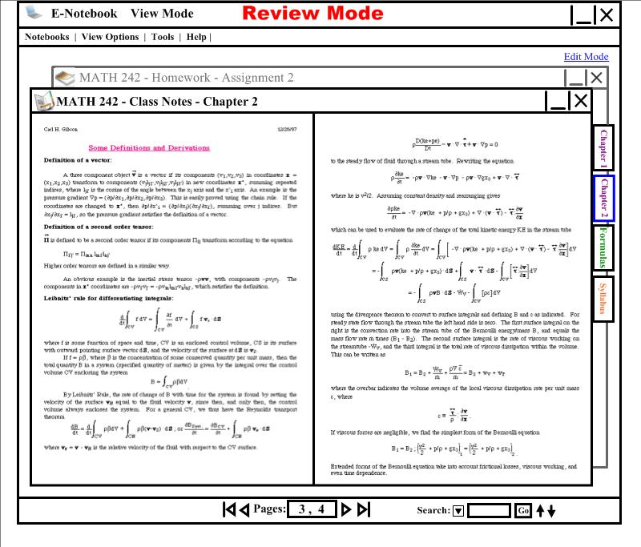
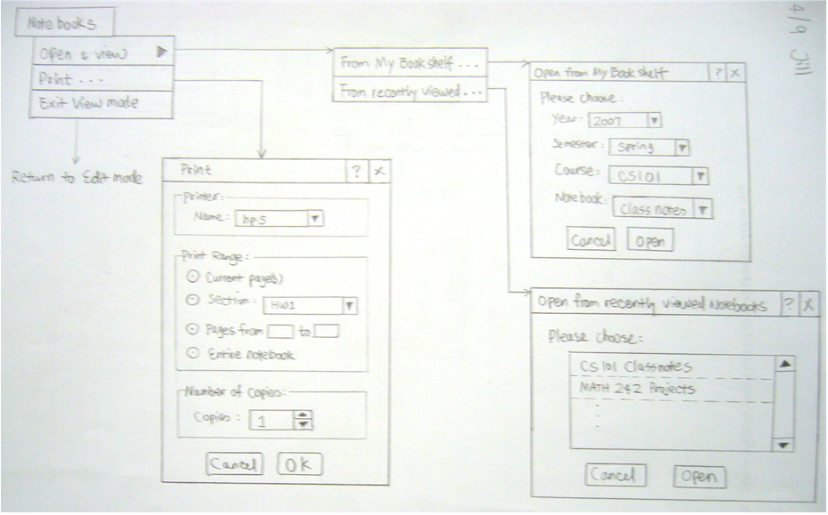
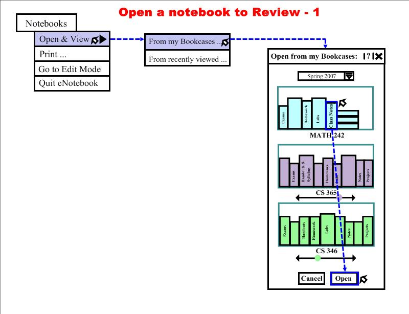

The ENotebook
surveys focus group design & prototyping data triangulation
Information Assimilation (IA) is the ability to gather, edit, note, annotate, organize, and save information from multiple, disparate sources, often using the Internet. Students in higher education engage in IA to accomplish their academic tasks. For example, to begin on an assignment, a student might print out the assignment posted online, annotate the print-out, and collect other students' notes on the assignments' topic. Unfortunately, techniques like printing, using browser bookmarks and email for task management activities, and rewriting electronic information out by hand are non-integrated and inconsistent.
To understand how students engage in IA and how to design better tools to support their IA activities, I contributed to an extensive user study that involved over 300 students and instructors. The study triangulated three sources of data: 32 two- to three-hour shadowing sessions of students, 10 interviews with instructors, and 280 questionnaires responded by students. I helped to design the questionnaire and analyze observation data, interview data, as well as questionnaire responses.
In addition to the user study, I helped to design early prototypes of the ENotebook software aimed at supporting students' IA needs, and conducted a set of five focus groups with students to gather feedback on a low-fidelity prototype. I designed the UI and workflows for viewing notebooks, selecting options, search, zoom-in/-out, and print. The prototypes were created using pen and paper, PowerPoint, and the SmartBoard.
| Before focus groups | After focus groups |
|---|---|
|  |  |
| Iteration 1 | Iteration 2 |
|---|---|
|  |  |
|  |  |
Time: 2006 - 2007
Supervisor: Dr. Yolanda Reimer
Sponsoring agency: National Science Foundation Faculty Early Career Development Program. Award No. IIS-0545681.
Publications:
- Yolanda Jacobs Reimer, Erin Brimhall, Chen Cao, Kevin O'Reilly, Empirical User Studies Inform the Design of an E-Notetaking and Information Assimilation System for Students in Higher Education, Computers and Education 52, 4 (2009).
- Yolanda Jacobs Reimer, Erin Brimhall, Chen Cao, Synergy Between Education and Research in a Studio-based User Interface Design Class. International Conference on Frontiers in Education: Computer Science and Computer Engineering, 2007, p47-53.